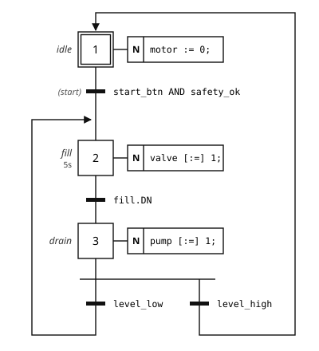

Jump routing: before / after
Same chart, textbook look with step numbers. The L5X export is unchanged; only the drawing changes.
sfc tank
init idle
motor := 0;
-- start: start_btn AND safety_ok
step fill 5s "Fill the tank"
valve [:=] 1;
-- fill.DN
step drain
pump [:=] 1;
select
-- level_low -> fill
|
-- level_high -> idle
end
Before (current renderer)
After (proposed)
- Each return line goes up on the side of its leg: the left leg loops on the left, the right leg on the right. Nothing crosses.
- Lanes hug the chart (just past the widest element they pass), not the far edge.
- A jump into a step that has another input joins its link with an arrow; there's no extra bar. The L5X still gets its selection convergence.
- A jump into a step with no other input (here idle) enters it from the top.
- No "1"/"2" target labels when the line is drawn all the way.